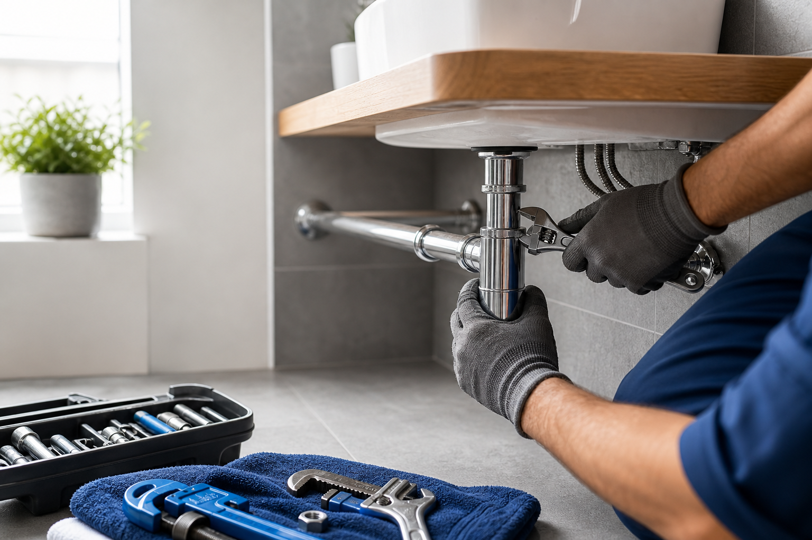

Montáž a kontrola sifonuNapojení, dotažení, kontrola těsnosti a čisté předání.
Důvěra v praxi
Ukázky práce a zkušenosti zákazníků.
U instalatérských prací rozhoduje čisté provedení, domluva a férové předání. Tady je styl práce, kterým se chce JJ instalatér prezentovat.

Demontáž staré baterie, montáž nové, kontrola přívodů a těsnosti.
Typ práce: voda a rozvodyVýměna vadného dílu, seřízení napouštění a kontrola splachování.
Typ práce: sanitaVyčištění sifonu, proplach, kontrola zápachu a doporučení prevence.
Typ práce: odpadyCo zákazníci oceňují
Potřebovali jsme opravit únik pod dřezem. Domluva rychlá, práce čistá.
LiberecUcpaný odpad v koupelně byl hotový během návštěvy.
TurnovVýměna baterie a sifonu proběhla přesně tak, jak bylo řečeno.
Jablonec nad NisouTohle je u řemeslníka detail, který si člověk zapamatuje.
ChrastavaMísto pro reálné fotky
Až budete mít vlastní fotky z práce, jen je vyměníme za tyto připravené pozice.
Foto 1Výměna baterie
Foto 2Čištění odpadu
Foto 3Montáž bojleru
Foto 4Práce na topení